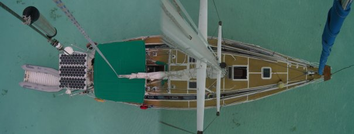
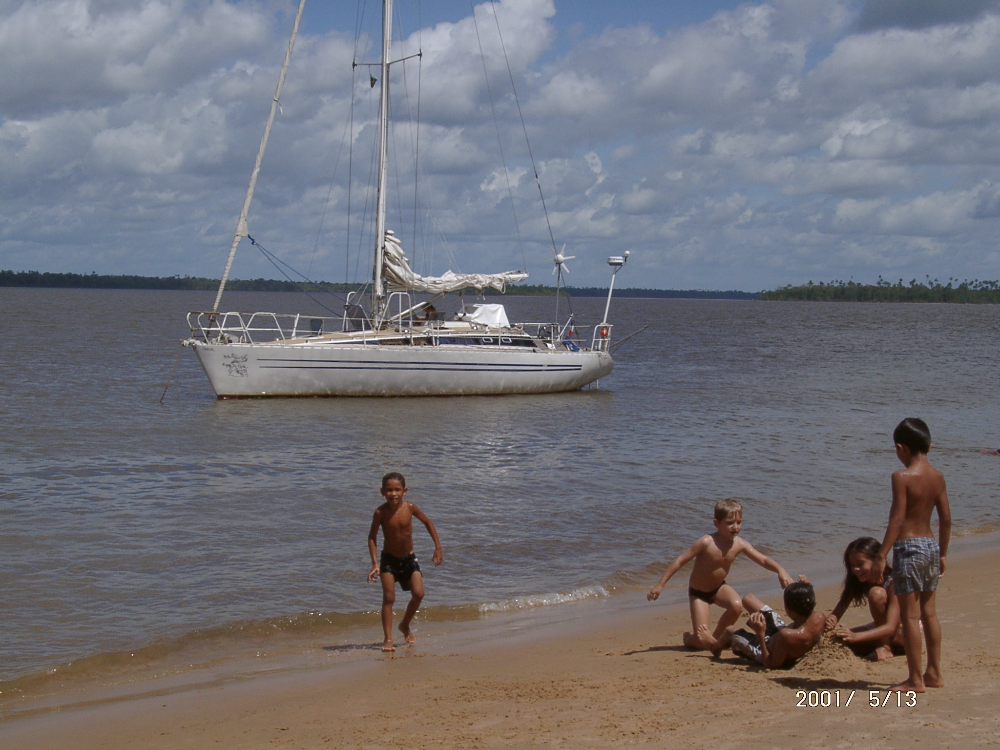
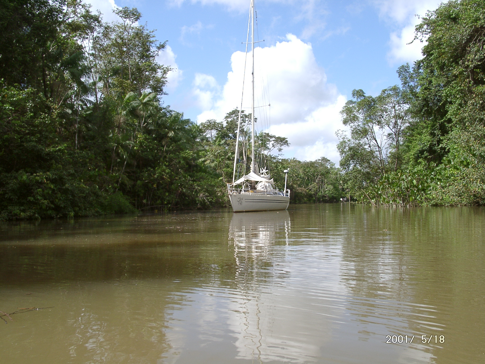

L'association "Les Jeannettes" a été créée en 2024 dans le but de favoriser
des courts séjours en mer à vocation sociale et artistique. Elle se destine particulièrement à
des publics spécifiques et en particulier des femmes victimes de violences, des personnes âgées
esseulées en situation de précarité et des MSG (minorités sexuelles et de genres) entre 14 et 25 ans.
Le bateau pourra également être un lieu de mise à l'abri. L'association permet
d'expérimenter la voile et le territoire marin en collectif pour des personnes qui n'y ont
généralement pas ou peu accès, dans un esprit de voile solidaire.


En lien avec les structures sociales, les bénéficiaires seront accompagnés sur une
partie pratique de voile (afin de s'emparer de la mer) ainsi que sur des ateliers en lien avec
une art-thérapeute et des intervenant.es artistiques.
Le voilier sera également un outil de diffusion de littérature féministe, à
travers une librairie itinérante, qui s'amarrera ponctuellement dans différents ports
et sur le même modèle un lieu/outil de résidence artistique pour la porteuse du projet et
d'accueil ponctuel d'autres artistes (créations, recherches, expositions).
À quoi servira l'argent collecté ?
À la réparation et préparation du bateau ainsi qu'à l'assistance logistique que Passe-Coque
amène qu'il soit écologique, social, humanitaire, ou patrimonial mais surtout maritime.
